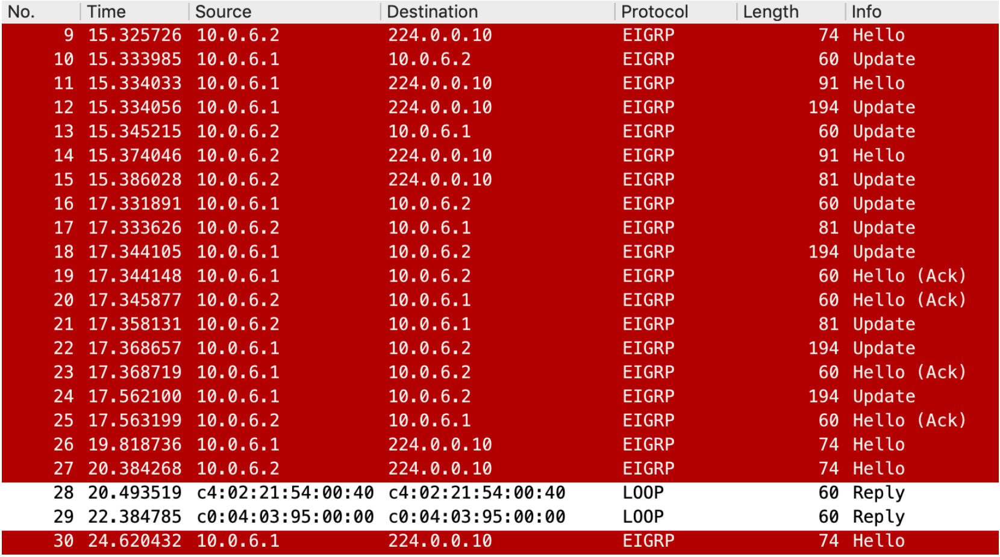
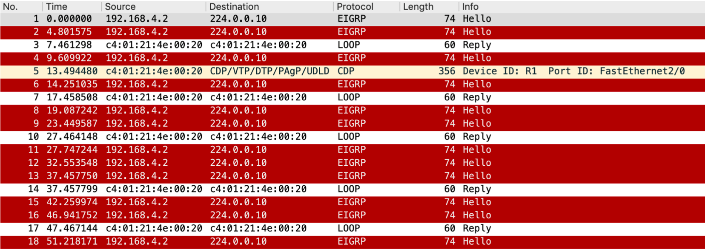
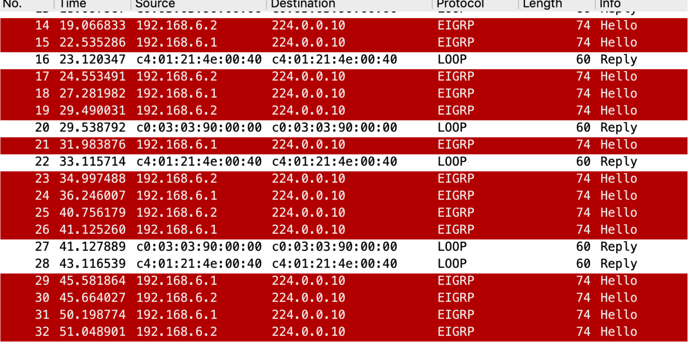
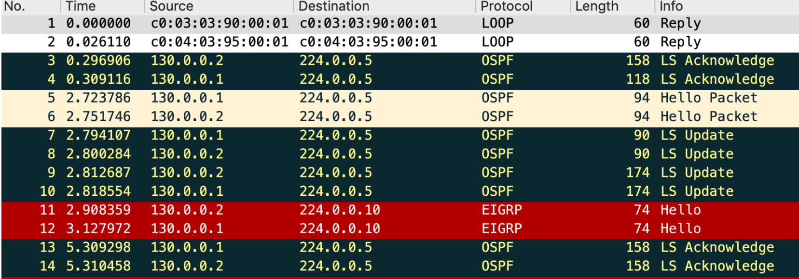

A Tree topology using EIGRP Networking Protocol created using GNS3
Since EIGRP is a distance-vector routing protocol, a router running EIGRP can dynamically find the best path between any two "layer 3" nodes through the process of sending and receiving routing advertisements to and from its neighboring EIGRP routers. When communicating with its neighboring EIGRP routers, a router will send 5 different packets: Hello, Update, Query, Reply, Acknowledgement. This can be seen when capturing a newly connected link to an EIGRP router.
Hello, Update, Query, Reply & Acknowledgement of EIGRP
On a stable network, only Hello packets would be sent, which results in a very low usage of network resources during normal operation. This can be noticed when capturing any link connected to an EIGRP router.
Hello packets from EIGRP router
EIGRP should not form neighbor adjacency links on any interface where other EIGRP routers do not exist for security reasons. In Figure 4, if router R3 was not an EIGRP router then, no routing advertisements should be sent through the interface between router R1 and router R3. Capturing the link between R1 and R3 shows routing advertisements from both R1 (192.168.6.1) and R3 (192.168.6.2).
Routing advertisements on link R1-R3
In case R3 was not EIGRP router, then the interface from R1 to R3 can set to be passive, and no routing advertisements would be captured on that particular link. Routing advertisements would still be captured from other interfaces.
A similar Tree Topology, but now using OSPF Networking Protocol
Since OSPF is a Link state routing protocol, it uses LSA floods as a mechanism of advertising. The figure below shows some captured LSA floods that includes Hello, Update and Acknowledgement packets.
LSA floods